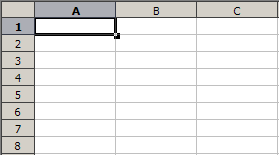
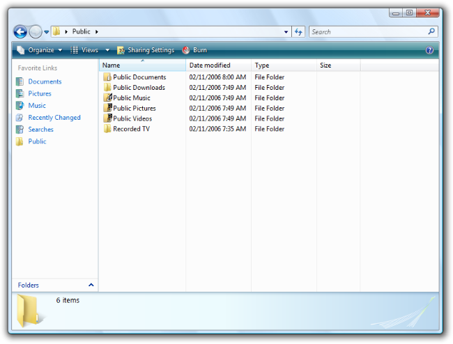
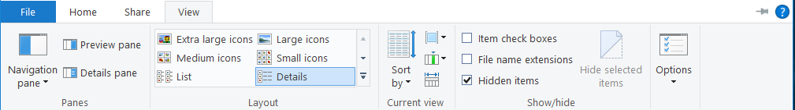
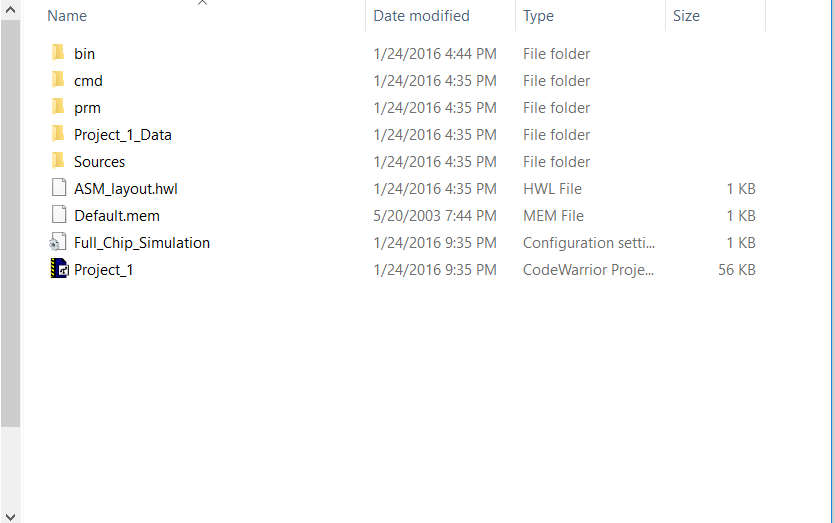
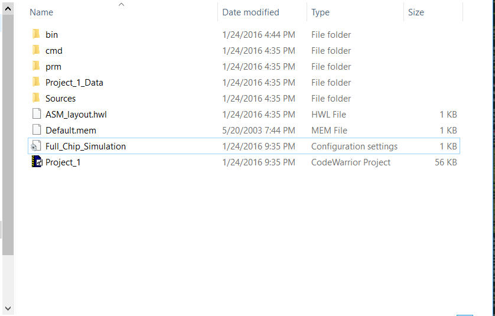

Tables are a manner of data representation similar to lists which organize elements by means of rows and columns. This allows for efficient organization of data elements and their properties.
As mentioned above, any form of data representation that makes use of columns and rows can be termed a table. While the overall structure of tables tends to remain uniform across platforms, there may be several aesthetic differences between table representations. Images may be used in conjunction with data, and rows or elements may appear selectable, for example.
Below is a simple table listing the primary colors and their hex values.
| Color | Hex Value |
|---|---|
| Red | #FF0000 |
| Green | #00FF00 |
| Blue | #0000FF |
There are two kinds of separate behaviors that are typically seen in tables.
The first is that of a read-only data table used simply to showcase data in a grid. Some platforms may allow for sorting of the contents within by alphabetical order, creation/modification date, etc.
The second is data entry tables, in which a user is welcome to input content into the grid. Depending on the table's functionality, inputs may be able to affect or directly address the contents of other cells within the row/column grid (Notable examples of this kind of behavior are Microsoft Excel and Google Sheets).
These behaviors may overlap depending on the platform or application in use. File explorers often mix the ability to sort data with the ability to edit an element's file name or properties.
Events related to tables vary depending on their functionality. For read-only tables as shown in the 'typical appearance' section, one may find it to contain only static text. Perhaps a hover event will be included to highlight selections. When the table is sortable click may be used to select the sort criteria. For data entry tables, click will be used to select cells, and the primary event will be input for inputting data. Events such as drag and drop may also be used to manipulate data.
Naturally, the states a table would cycle through depend on the features of that specific table. If one is looking at the simplest kind of read-only table, the table would exist in a single state, simply displaying data.
From this previous display state, placing the cursor over a data element may highlight the specific cell (or row, or column, depending on the table), leading to a hover state in which the user is made aware of their current data selection.
If a table is sortable (for example, by a click on top headers or main row elements) a sorting state must be added to the diagram which returns to the display state. In this case, the headers behave much like buttons which trigger a specific sorting state.
For tables with a data-entry functionality, one may trigger an input state by selecting a cell in the grid (depending on the table, only specific cells may be editable). In this state, the user is free to enter data into that specific cell. It may or may not still be possible to hover over other cells. Once the user is finished inputting data, the table returns to its display state.
So what makes for a good table?
An important aspect form of data representation is how fast the information becomes available to the user. This is not an issue when there are few elements to be displayed, or these elements are easier to display (e.g: a few cells filled with text).
When the elements are more complex and the amount of data is very large, a table should focus on making information visible to the user as quickly as possible. This means displaying simple onscreen data immediately, while displaying more complex elements like images as they become available. Including a loading bar or spinning indicator is a good practice for showing whether a table application is finished loading, dead, or loading more elements.
When a text element is long, it is natural to not display it in its entirety. However, this makes for poor readability. Good tables make their content succint, or allow the grid's size to be adjusted to show more content without truncating it. Do not, under any circumstances, truncate text when there is still display room in a cell.
hover events to improve selection visibility, or to allow one to sort data by row or column headers.
| Country | City |
|---|---|
| France | Paris |
| Uruguay | Montevideo |
| Canada | Ottawa |
| Austria | Vienna |


As tables are more typically known as a form of data representation, focus is to be placed on whether it is easy to find specific data within such a grid. As such, it is important that the system be efficient, memorable, and resistant to errors.
At their simplest, it is easy to learn how to use a table due in part to its intuitive design. The top and leftmost elements are (typically) used to signal what data will be found in each cell. It is simple logic to grasp, particularly when perusing through large sets of data that require numerous rows and columns to be accomodated. Another point in favor of tabular representations in user interfaces is that it is a very common system, and most first-time users are likely to recognize the layout on sight. These two points can also be brought up in favor of the memorability of the representation. As the use of tabular representations is both simple and widespread, it is very easy for people to remember how to read them.
Of course, this may depend on the extra features that developers may include in their tabular representations. Shortcuts in data entry or commands in applications such as Excel naturally have their own learning curves. More common functionalities such as clicking on a header to sort it accordingly are just as easy to remember, but a first-time user may need to be told about such a feature before they are able to use it.
A table's efficiency must be measured in terms of how quickly one can find desired data within it. This depends heavily on the amount of information displayed on the table. A user knowledgeable of the arrangement of one particular table might be able to find any needed data at a glance when the amount of data is small, but it is not feasible to expect users to remember the exact position of each column or row header in data sets that may have hundreds of each. In such cases (assuming all the data is in the same page and without counting the time spent scrolling around the screen), the user must locate the row in which their data is likely to be, followed by its header, and use those to find the cell in which their data is housed.
Other data organization structures such as lists have an issue in that even if they are sorted in some manner (alphabetical order, for example), a user must nonetheless read through several data elements before the desired one is found. Due to the tables indicating the precise location of the data needed, tables obviate the need to identify elements beyond headers and rows. Moreover, errors are rare due to the specificity of headers and the method used for finding data.
Satisfaction may be found in the ease with which elements can be organized in a neat manner and found through a clear procedure.
The most obvious usage of tables in the Windows 10 OS is the details view used in the file explorer.

The following image shows this view. Choosing the details view organizes a folder's files such that one can see each element within, along with the last date in which it was modified, the type of file the element is, and the size of the element. In the image, data is sorted in ascending alphabetical order (sort selection shown by the arrow in the Name header). This tabular representation also displays a data-entry functionality in that one can also change the name of files either by right clicking an item and selecting the Rename option or by clicking on an element again after it has been selected (without double-clicking).

The use of tables in file explorers is a combination of the read and data-input tables mentioned in the general variants section, and as such come closer to the kind of table dubbed navigation tablesem. As such, it should be noted that they may not be considered to be strictly tables. Case in point, Microsoft's guidelines for the tabular details view classifies it as a subset of lists.
According to Microsoft's guidelines, the leftmost column should contain the item's icon (if there is one) and label, and the other columns should contain additional information of their corresponding item. This is shown clearly in the above picture.
Default column width is to be appropriate for longer items. Data can be truncated, but it should only be done for odd-sized items (as shown in the bottom two file types in the presented image), or as a last resort. Tabular representations are not appropriate when all or most of the items are truncated. Moreover, data should not be truncated if there is still display room.
The file explorer also allows for one to resize the width of its columns. The following image shows the same folder with an expanded Type column.
